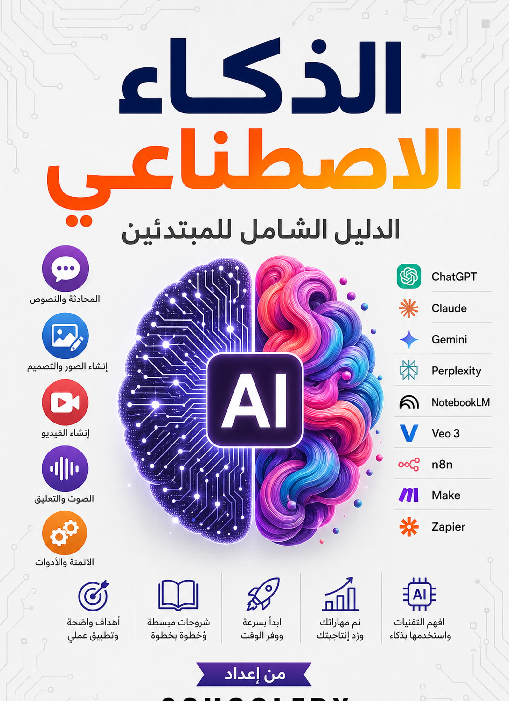
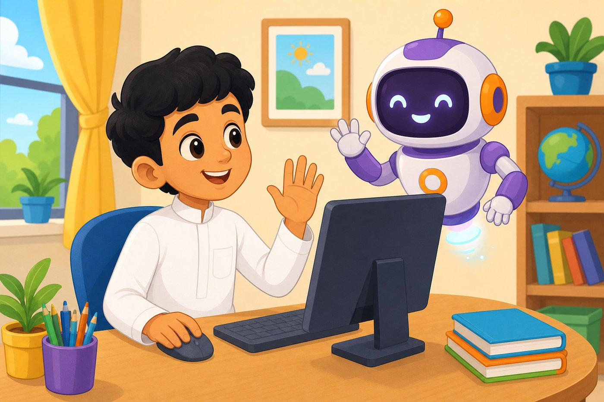
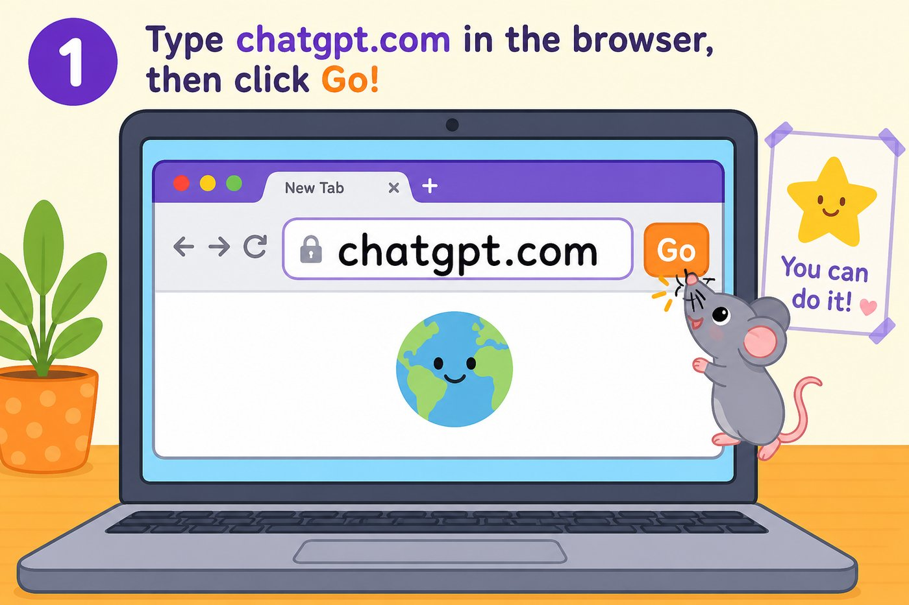
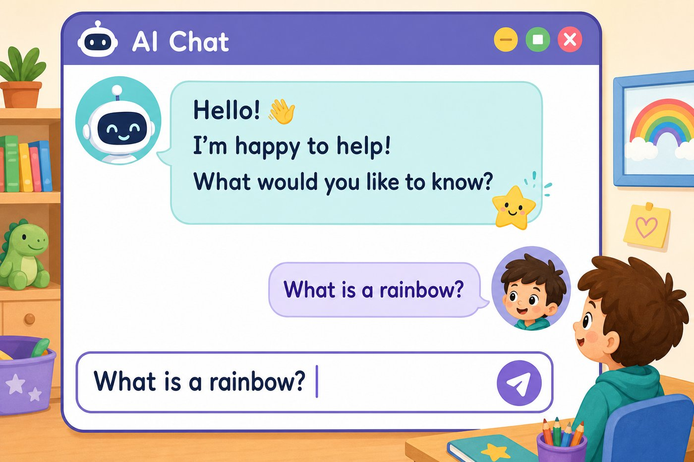
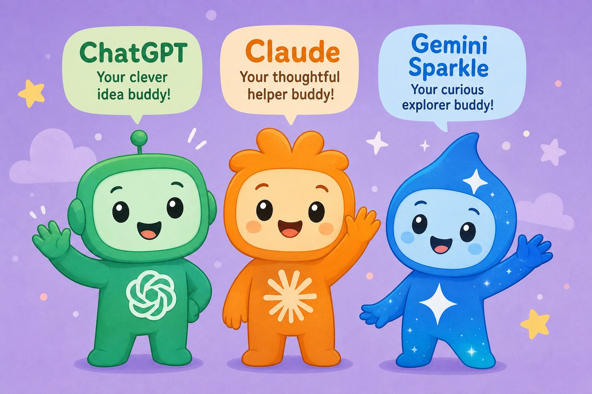
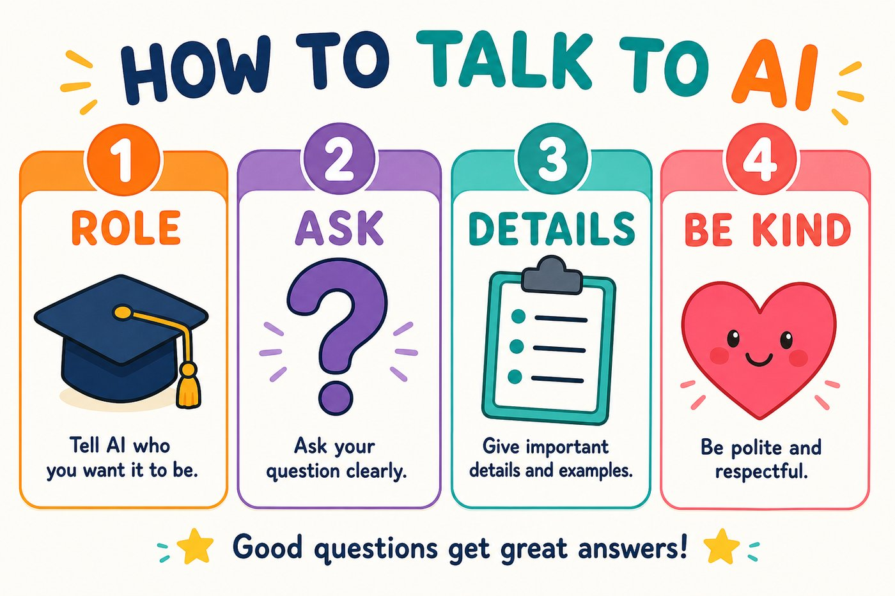
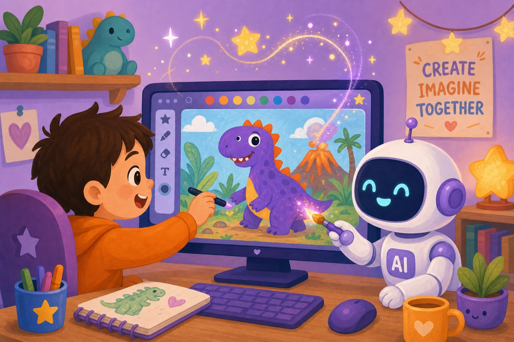
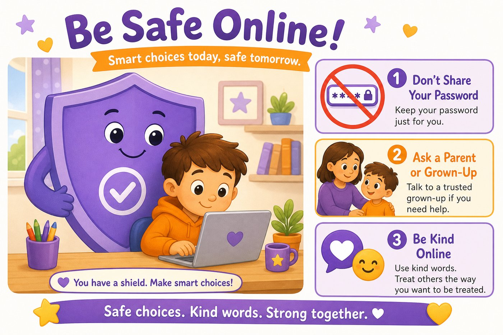

هذا الكتاب لك أنت!
أهلاً يا بطل! هذا الكتاب يعلّمك الذكاء الاصطناعي كأنك تلعب لعبة جديدة. كلمات سهلة. خطوات واضحة. صور تساعدك.

ماذا ستتعلّم؟
- ما هو الذكاء الاصطناعي؟
- كيف تفتح ChatGPT وتسأل سؤالاً
- أصدقاء آخرين مثل Claude و Gemini
- كيف تتكلم مع الذكاء الاصطناعي بوضوح
- كيف تطلب منه أن يرسم لك صورة
- كيف تبقى آمناً على الإنترنت
إذا احتجت حساباً أو بريداً إلكترونياً… اطلب مساعدة شخص كبير تثق به (أب، أم، معلّم).
ماذا داخل الكتاب؟
- القسم 1 — ما هو الذكاء الاصطناعي؟
- 1. صديق ذكي على الحاسوب
- 2. أين تراه كل يوم؟
- القسم 2 — ابدأ مع ChatGPT
- 3. افتح الموقع
- 4. اصنع حساباً
- 5. اسأل أول سؤال
- 6. أسئلة ممتعة للتجربة
- القسم 3 — أصدقاء آخرون
- 7. تعرّف على Claude
- 8. تعرّف على Gemini
- 9. أي صديق نختار؟
- القسم 4 — كيف نتكلم معه؟
- 10. اطلب بوضوح
- 11. أعطِه دوراً
- 12. أضف تفاصيل
- 13. ألعاب تدريب
- القسم 5 — الصور
- 14. اطلب صورة
- 15. صف الصورة ببساطة
- القسم 6 — مرح إضافي
- 16. صوت وموسيقى
- 17. فيديو قصير
- القسم 7 — مشاريع ممتعة
- 18. عشرة مشاريع للأطفال
- القسم 8 — كن بطلاً آمناً
- 19. قواعد الأمان
- 20. ماذا بعد؟
ما هو الذكاء الاصطناعي؟
هيا نفهم الفكرة الكبيرة بكلمات صغيرة.
صديق ذكي على الحاسوب
الذكاء الاصطناعي هو برنامج ذكي يساعد الناس. ليس إنساناً حقيقياً. وليس وحشاً. هو مثل صديق على الشاشة يحب الإجابة والرسم والشرح.
ببساطة شديدة
- تكتب له سؤالاً
- هو يقرأ سؤالك
- ثم يكتب لك جواباً
اسمه بالإنجليزية AI. وبالعربية: الذكاء الاصطناعي. معناها: ذكاء مصنوع على الحاسوب.
ماذا تعلّمنا؟
- الذكاء الاصطناعي برنامج مساعد.
- نتكلم معه بالكتابة (وأحياناً بالصوت).
- هو ليس بشرياً… لكنه مفيد جداً.
أين تراه كل يوم؟
ربما تستخدمه الآن دون أن تعرف اسمه!
يوتيوب
يقترح فيديوهات قد تحبها
الألعاب
شخصيات تتحرك بذكاء
الخرائط
تُظهر الطريق الأسرع
الصور
الهاتف يرتّب صور وجهك
بعض الأدوات ماهرة في شيء واحد (مثل تمييز الوجوه). وبعضها يقدر يكتب ويرسم ويشرح. لا تحتاج حفظ أسماء معقدة. فقط تذكّر: هناك أدوات كثيرة… ونحن سنتعلم أشهرها.
اسأل شخصاً كبيراً: «أين نرى الذكاء الاصطناعي في بيتنا؟» اكتبوا معاً 3 أشياء.
ابدأ مع ChatGPT
هيا نفتح أشهر صديق ذكي… خطوة خطوة.
افتح الموقع
سنذهب إلى موقع ChatGPT. اتبع الخطوات بهدوء.

لا تدخل إلى مواقع غريبة تشبه الاسم. الأفضل: chatgpt.com
جرّب الآن مع شخص كبير: Google ← اكتب chatgpt ← افتح الموقع الصحيح.
اصنع حساباً
للحفظ والمتابعة تحتاج حساباً. افعل هذا مع شخص كبير.
لا تكتب اسم مدرستك الحقيقي، عنوان بيتك، أو رقم هاتف داخل المحادثة.
اسأل أول سؤال
الآن الجزء الممتع: اكتب سؤالاً واضغط إرسال.

علّمني جدول 7 بطريقة لعبة ممتعة.
اسأل الآن: «أعطني نكتة قصيرة عن القطط.» ثم اسأل: «أعطني نكتة أخرى.»
ماذا تعلّمنا؟
- نكتب في الصندوق السفلي.
- إذا صعب الجواب نطلب شرحاً أسهل.
- يمكن سؤال أكثر من مرة.
أسئلة ممتعة للتجربة
انسخ فكرة… وغيّرها كما تحب.
إذا أجاب بشيء غريب أو خطأ… قل لشخص كبير. الذكاء الاصطناعي يخطئ أحياناً.
أصدقاء آخرون
ChatGPT ليس الوحيد. هناك أصدقاء أذكياء آخرون.
تعرّف على Claude
Claude صديق ذكي آخر. كثير من الناس يحبونه للكتابة الطويلة والشرح الهادئ.

متى تجربه؟
- عندما تريد قصة أطول
- عندما تريد تلخيص درس بهدوء
- عندما تريد مساعدة في ترتيب أفكارك
فكّر هكذا: ChatGPT صديق سريع وكثير المهارات. Claude صديق هادئ يحب الشرح الجميل.
تعرّف على Gemini
Gemini من Google. مفيد إذا كنت تستخدم أدوات Google.
- يساعد في الشرح والبحث
- يرتبط أحياناً بخدمات Google
- طريقة السؤال نفسها: اكتب بوضوح!
مع شخص كبير: افتحوا Gemini واسألوا: «علّمني دورة الماء في الطبيعة بكلمات أطفال.»
أي صديق نختار؟
لا تحتاج حفظ جداول معقدة. استخدم هذه القاعدة الذهبية:
للسؤال العام
ابدأ بـ ChatGPT
للشرح الطويل
جرّب Claude
مع عالم Google
جرّب Gemini
مهم جداً
اسأل شخصاً كبيراً دائماً
الأهم ليس اسم الأداة… الأهم أن تسأل سؤالاً واضحاً.
كيف نتكلم معه؟
السر ليس كلمات سحرية. السر أن تكون واضحاً ولطيفاً.
اطلب بوضوح
إذا قلت «ساعدني» فقط… لن يعرف بماذا. إذا قلت طلبك بوضوح… يساعدك أفضل.

ضعيف
أفضل
ماذا تعلّمنا؟
- وضّح ماذا تريد.
- قل لمن الجواب (لطفل مثلي).
- قل الشكل: نقاط أو قصة قصيرة.
أعطِه دوراً
يمكنك أن تقول له: تظاهر أنك معلّم… أو قاصّ قصص… أو مدرب ألعاب.
اختر دوراً واحداً وجرّبه الآن. هل صار الجواب أجمل؟
أضف تفاصيل
التفاصيل مثل المكونات في الكعكة. كلّما أوضحت أكثر… النتيجة ألذ.
أضف دائماً
- الموضوع
- لمن؟ (عمري 8 سنوات)
- الطول (قصير / 5 نقاط)
- الأسلوب (مضحك / هادئ / كقصة)
بعد الجواب اكتب: «اجعله أقصر» أو «أضف مثالاً» أو «اجعله أسهل».
ألعاب تدريب
تدريب = لعب!
لعبة 1: اطلب نفس السؤال بطريقتين: قصيرة وطويلة. أي جواب أحببت؟
لعبة 2: أعطِه دور معلّم ثم دور مهرّج لنفس الموضوع. قارن.
لعبة 3: اطلب قائمة 5 أفكار لهدية عيد ميلاد لصديق يحب الرسم.
اصنع صوراً
يمكنك أن تطلب صورة… كما تطلب رسمة من صديق.
اطلب صورة
بعض الأدوات ترسم بالذكاء الاصطناعي. داخل ChatGPT يمكنك غالباً طلب صورة.

لا تطلب صور أصدقائك الحقيقيين أو أشخاص غرباء. اطلب شخصيات خيالية لطيفة.
صف الصورة ببساطة
لا تحتاج كلمات صعبة. قل 4 أشياء فقط:
- من؟ (قطة / روبوت / طفل مستكشف)
- ماذا يفعل؟
- أين؟
- ما الإحساس؟ (مرح / هادئ / مغامرة)
اختر حيوانك المفضل واطلب له صورة وهو يلعب رياضتك المفضلة.
مرح إضافي
الصوت والموسيقى والفيديو… فكرة سريعة فقط.
صوت وموسيقى
بعض الأدوات تحول الكتابة إلى صوت… أو تصنع مقطوعة موسيقية قصيرة.
- اكتب نصاً قصيراً ثم اطلب قراءته بصوت لطيف (مع شخص كبير).
- للموسيقى: صف الإحساس مثل «موسيقى سعيدة لوقت الرسم».
استمع دائماً بحضور شخص كبير للأدوات الجديدة.
فيديو قصير
هناك أدوات تصنع فيديو قصير من جملة. النتائج تتغير بسرعة… والأهم الفكرة.
لا تحتاج إخراج فيلم طويل. فكرة صغيرة = نجاح كبير.
مشاريع ممتعة
اختر مشروعاً… وأنهه اليوم!
عشرة مشاريع للأطفال
كل مشروع صغير… لكنه يعلمك مهارة كبيرة.
مشروع 1: كاتب القصص
كيف؟ دور قاصّ + تفاصيل البطل + طلب رسمة غلاف
مشروع 2: معلّم الرياضيات اللطيف
كيف؟ اشرح كأنني 8 سنوات + مثال + تمرين صغير
مشروع 3: بطاقة عيد ميلاد
كيف؟ اكتب تهنئة قصيرة ثم اطلب صورة احتفال
مشروع 4: مدرب المفردات
كيف؟ كلمة + معنى سهل + جملة + رسم ذهني
مشروع 5: عالم الفضاء الصغير
كيف؟ 5 حقائق سهلة + صورة متخيلة للكوكب
مشروع 6: نادي النكات النظيف
كيف؟ اطلب نكات لطيفة بدون إحراج
مشروع 7: مخطط الحقيبة
كيف؟ خطوات صباحية قصيرة مع وقت
مشروع 8: مسرحية دقائق
كيف؟ مشهد مضحك قصير لتمثيله مع صديق
مشروع 9: مجلة الصف
كيف؟ اكتب خبر «روبوت زار مدرستنا»
مشروع 10: يوميات الامتنان
كيف؟ حوّلها إلى فقرة يوميات لطيفة
اختر مشروعاً واحداً الآن وأهه خلال 15 دقيقة.
كن بطلاً آمناً
القوة الحقيقية = الذكاء + الأمان + اللطف.
قواعد الأمان

- لا تشارك كلمة السر.
- لا تكتب عنوان بيتك أو رقم هاتفك في المحادثة.
- إذا ظهر شيء يخيفك… أغلق الصفحة وأخبر شخصاً كبيراً.
- كن لطيفاً في كلامك. الكلمات الطيبة تصنع أجوبة أجمل.
- لا تنسخ واجب المدرسة كاملاً بدون فهم. اطلب شرحاً لتتعلّم.
الذكاء الاصطناعي يخطئ أحياناً. لا تصدّق كل شيء بسرعة. اسأل معلّمك أو ولي أمرك.
ماذا تعلّمنا؟
- الأمان أولاً.
- اطلب مساعدة كبيرة عند الحاجة.
- تعلّم… لا تغش.
ماذا بعد؟
أحسنت! أنت الآن تعرف البداية.
خطتك للأسبوع القادم
- كل يوم: سؤال واحد واضح لـ ChatGPT
- يومين: تجربة دور مختلف (معلّم / قاصّ)
- مرة: اصنع صورة واحدة لطيفة
- مرة: أنهِ مشروعاً من درس 18
علّم صديقاً واحداً ما تعلمته. التعليم يثبت الفهم!
نهاية كتاب الأطفال
من إعداد SCHOOLERX
كبرت الآن خطوة… إلى لقاء في المغامرة التالية!